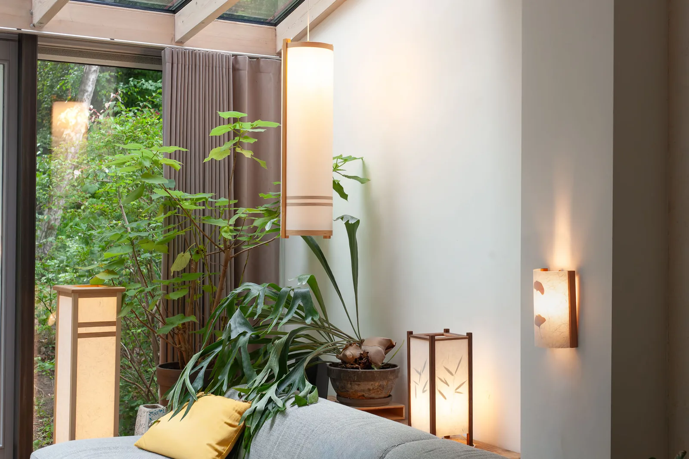

Warmte en rust
Collectie
Japans
De lampen uit de collectie Japans zijn geïnspireerd door de Japanse traditie en esthetiek. Met de minimalistische vorm en het gebruik van natuurlijke materialen stralen ze warmte en rust uit. De lampen zijn zowel te verkrijgen in onderstaande standaarduitvoeringen als varianten met andere hout- en papiersoorten. Heeft u een eigen idee voor uw ruimte? Het is ook mogelijk om een lamp volledig op maat te laten maken. Neem contact op om de mogelijkheden te bespreken.



Materialen
Hout en papier
Bij uw aanvraag heeft u keuze uit verschillende houtsoorten en papiersoorten. De papiersoorten zijn beschikbaar voor elke lamp. In welke houtsoort een lamp beschikbaar is, staat op de productpagina van de lamp.
Hout
Kies een soort voor een close-up.
Papier
Maatwerk
Een lamp op maat?
Zit de lamp die u zoekt er niet bij? Het is mogelijk om in overleg met Jelle een lamp naar uw wensen te laten ontwerpen.
Beschrijf uw idee